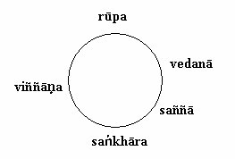
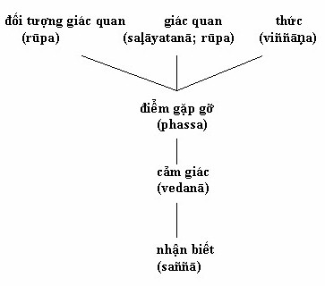

Chương 7 Mối tương quan giữa các tập hợp Trong những chương trước, ta bàn về mỗi tập hợp mà không lập chi tiết mối liên hệ hỗ tương giữa các tập hợp này. Tuy nhiên, chỉ hiểu nghĩa bề ngoài của các tập hợp này thôi sẽ cho ta hiểu hời hợt tâm lý học Phật Giáo. Lối hiểu biết cho rằng rūpa tương đương với sáu cửa giác quan và nhận biết đơn thuần, vedanā với cảm giác, saññā với sự nhận biết, saṅkhāra với bất cứ hành vi nào tạo ra kết quả, viññāṇa với thức đều quên không giải thích gì tới sự vận hành của tâm hay tới con đường đưa đến thoát khổ. Mặt khác, hiểu biết về mối tương quan giữa các tập hợp này sẽ làm tăng hiểu biết của chúng ta về tâm lý học Phật Giáo. Cho tới đây, thứ tự năm tập hợp liệt kê theo kinh tạng đã được trình bầy. Theo hiểu biết của tôi, kinh tạng không đưa ra một thứ tự nào khác.[1] Bất hạnh thay, ngoài thứ tự năm tập hợp đưa ra từ trước tới giờ, không phong phanh một manh mối nào nói về mối tương quan giữa các tập hợp này trong kinh tạng. Vì thế ta phải suy luận tiến trình vận hành của chúng từ các thuyết cốt tủy của đạo Phật. Tôi sẽ luận định rằng nhiệm vụ của mỗi tập hợp, theo thứ tự của nó, có thể liên hệ trực tiếp đến thuyết paṭiccasamuppāda - đặc biệt là tám khoen ở giữa. Ba tập hợp -saṅkhāra, viññāṇa, và vedanā- cũng như toàn thể hiện tượng tâm-vật lý được gọi là nāmarūpa, đều bao gồm cả trong thuyết paṭiccasamuppāda, chỉ rõ mối liên hệ mật thiết giữa thuyết này và năm tập hợp. Trong chương này, tôi chỉ đưa ra ‘vấn đề thứ tự’ vốn tự nó biểu lộ ra khi thử lập mối tương quan giữa năm tập hợp và tám khoen giữa của paṭiccasamuppāda. Hai là, tôi sẽ xét từng khoen một trong tám khoen giữa của paṭiccasamuppāda và chỉ ra năm tập hợp nào có thể có liên hệ với các khoen ấy. Sự tìm hiểu này sẽ chứng tỏ rằng ngoại trừ saññā ra, các tập hợp có vai trò rõ ràng trong tám khoen giữa này. Ba là, tôi sẽ dẫn chứng, tuy ngụ ý, nhưng cốt yếu, là có sự hiện hữu của saññā giữa hai khoen vedanā và taṅhā. Sau hết, tôi sẽ giải thích ngắn gọn sự vận hành của năm tập hợp này trong thiền quán thực tánh (vipassana). Vị trí của Viññāṇa trong sự liệt kê Pañcakkhandhā Theo sự liệt kê về pañcakkhandhā từ trước đến giờ, viññāṇa xuất hiện sau cùng. Điều này gây bối rối, vì làm sao nhiệm vụ của rūpa, vedanā saññā và sañkhāra có thể được hoàn thành nếu không có thức ở đấy để nhận biết và tiếp xúc với thế giới bên ngoài? Điều này ngụ ý rằng nếu chỉ có ‘thuần nhận biết’, cảm giác, hay cho đến ‘sự nhận ra dữ kiện giác quan’ mà viññāṇa không hay biết gì cả là điều không thể được. Trong toàn thể kinh tạng, điều hiếu kỳ này giống như tại sao, trong các tập hợp, viññāṇa được liệt kê là yếu tố sau cùng. Tuy nhiên, tôi tin là có sự giải thích rất đơn giản. Ý niệm về tái tiến hóa, được nói tới trong thuyết tái sanh, là yếu tủy của đạo Phật. Theo thuyết này, sau cái sanh, chết là hậu quả tự nhiên và không thể nào tránh được, và có cái sanh khác theo sau không muốn cũng không được - dĩ nhiên là ngoại trừ người đã thoát ra khỏi chu kỳ saṁsāra bằng cách trở thành arahant. Trong Phật Giáo, khi đề cập tới các nhóm như năm lực (bala) và tám chánh đạo - yếu tố sau cùng biến hóa và trở lại qui định điều kiện hay củng cố yếu tố thứ nhất. Tuy nhiên, các học giả tranh luận là có phải các yếu tố khác nhau này được giải thích theo thứ tự hay theo chu kỳ.[2] Tôi không có chủ ý chứng minh rằng quan điểm theo chu kỳ hiển nhiên vận hành bên trong năm lực hay bên trong tám chánh đạo. Khảo hướng như thế có thể hợp lý, nhưng lập nó lên đòi hỏi sự nghiên cứu thật đầy đủ. Hơn nữa, dù năm lực hay tám chánh đạo có thể được tiếp cận từ quan điểm theo chu kỳ không cần thiết cho bài nghiên cứu này, vì kinh điển chỉ rõ ràng là năm tập hợp chắc chắn chịu ảnh hưởng của quan điểm này. Vì thế điều này ngụ ý rằng, yếu tố sau cùng của năm tập hợp cũng sẽ trở thành yếu tố thứ nhất, vì viññāṇa tiến hóa từ vị trí cuối cùng để trở thành thứ nhất của nhóm các tập hợp (xem bảng 9). Bảng 9 Bánh xe tập hợp  Thuyết này được paṭiccasamuppāda hỗ trợ, trong đó viññāṇa được đặt trước khoen tâm vật thể. Năm tập hợp tự chúng tạo nên ý niệm căn bản về tâm vật thể. Vì tập hợp cuối cùng là viññāṇa, tập hợp thức này sẽ sanh ra một bộ các tập hợp mới cho đến khi nào người ta bứt đứt được chuỗi saṁsāra. Điều mà thức ‘phát sanh ra’ tâm và vật thể nhấn mạnh khía cạnh chu kỳ của năm tập hợp. Thuyết này được các đoạn kinh trong hai bộ kinh chính hỗ trợ. Đoạn kinh đầu tiên trong Saṁyuttanikāya, Sāriputta được Phật gọi là tăng thống Dhamma (Dhammasenapatti)[3] - giải thích cho Mahākoṭṭhika rằng tâm và vật do viññāṇa qui định và cũng chính viññāṇa ấy do tâm và vật qui định.[4] Đoạn kinh thứ hai từ Dīghanikāya, nói đến bồ tát Vipassī hồi tưởng lại đến bản chất của thức và của tâm-vật thể. Kết quả cũng giống như của Sāriputta: viññāṇa qui định tâm-vật và ngược lại.[5] Điều này chỉ rõ là viññāṇa có thể được coi như là tập hợp cuối cùng như đã được liệt kê trong pañcakkhandhā, hay là tập hợp thứ nhất vì viññāṇa cần cho bốn tập hợp kia sanh khởi. Sau khi chỉ rằng viññāṇa có thể được coi là tập hợp thứ nhất hay cuối cùng của pañcakkhandhā, ta bắt đầu thực sự phân tích paṭiccasamuppāda. Tương quan giữa Bốn tập hợp và Paṭiccasamuppāda Trong bảng 10, mười hai khoen trong chuỗi sanh khởi do tùy thuộc được chia thành ba loại cổ điển - quá khứ, hiện tại, tương lai. Mỗi loại đại diện cho phương tiện giải thích ý niệm và tâm-vật thể khi được quan sát theo nghĩa rộng nhất, kể cả năm tập hợp.[6] Vì mục đích của sách này, tôi chỉ giới hạn sự phân tích vào loại thứ hai, nơi năm tập hợp hiện hữu rõ nhất và tôi sẽ chứng minh rằng năm tập hợp hiện hữu trong tám khoen này. Tám yếu tố nối liền nhau trong loại thứ hai này có thể được coi là nói khác đi hay giải thích chi tiết hơn tiến trình tâm vật do chính tâm vật vận hành. Bảng 10 Paṭiccasamuppāda nhìn theo khía cạnh Tâm và Vật Thể
Khoen đầu tiên được kể trong nhóm giữa của paṭiccasamuppāda là viññāṇa. Trong khi viññāṇa là yếu tố cuối cùng của pañcakkhandhā, nó có thể được coi là yếu tố thứ nhất. Theo lối giải thích cổ về paṭiccasamuppāda, là một yếu tố của chuỗi này, thức không là gì khác ngoài tái sanh thức.[7] Nhưng như ta đã thấy vào giây khắc sanh khởi, mỗi thức là tái sanh thức, và ở giây khắc tử diệt, mỗi thức là cận tử thức. Tuy nhiên, ngay khi thức khởi lên, tâm và vật thể sanh ra.[8] Nhiều đoạn kinh khác giải thích khoen thứ hai của nhóm giữa, tâm-vật thể (nāmarūpa) là cái gì gồm cả năm tập hợp. Danh từ nāmarūpa tự nó đã được dùng trong các hệ thống triết học thời tiền Phật. Như Sarathchandra đã chỉ rõ: Mượn từ văn học thời tiền Upanishad, chữ nāmarūpa có hai nghĩa. Như Upanishad, một để chỉ con người thực nghiệm, là con người chỉ biết được thực tại tương đối. Nhưng đôi khi nó là danh từ hàm xúc bao gồm toàn thể thế giới hiện tượng gồm có tâm thức và vật chất.[9] Đạo Phật cũng quy hai nghĩa ấy vào danh từ này. Tuy nhiên, theo tinh thần của paṭiccasamuppāda nghĩa của chữ này giới hạn trong cơ cấu tâm-vật của cá nhân. Các tác giả cuốn Pāli English Dictionary[10] ghi là bản chú giải về Dhammapada có nói rằng bốn tập hợp tâm cộng với tập hợp vật thể tạo thành tâm và vật.[11] Trong toàn văn hệ Pāli,[12] có rất nhiều đoạn văn đồng ý nhận định này. Nhưng lạ thay, ta cũng nhiều lần tìm thấy mâu thuẫn rõ ràng về định nghĩa tâm và vật. Nhận định này được Étienne Lamotte cho rằng: ‘nói là tâm [nāma], nó muốn ngụ ý rằng ba tập hợp tâm mà không có vijñāna’.[13] Cho dù vật thể luôn mang đặc tính của rūpakkhandha, tâm (nāma) trong một số đoạn kinh, chỉ được định nghĩa theo ba tập hợp - vedanā, saññā và saṅkhāra - thay vì bốn.[14] Giải thích này loại viññāṇa ra khỏi phạm trù tâm. Dù mâu thuẫn trông hiển nhiên, vấn đề không nghiêm trọng như ta tưởng, vì lẽ giản dị là sự có mặt của tập hợp vật thể cùng với ba tập hợp tâm kia ám chỉ viññāṇa. Bởi vì saṅkhāra được liệt kê là một trong các tập hợp tâm, viññāṇa phải theo sau vì căn cứ theo paṭicca-samuppāda, saṅkhāra tạo cho viññāṇa sanh khởi (saṅkhārapaccayā -viññāṇaṁ). Hơn nữa, như đã thấy, phạm trù tâm và vật thể tự nó qui định điều kiện cho viññāṇa. Có lẽ một số chú dẫn trong kinh muốn loại viññāṇa ra khỏi định nghĩa về tâm và vật thể để tránh sự lập lại,[15] hay có thể họ giả định rằng sự có mặt của viññāṇa quá hiển nhiên đến nỗi không cần đề cập tới. Dù thức có được đề cập trong danh sách hay không, chả còn hồ nghi gì nữa, chức năng của nó luôn luôn hiện hữu: một mặt, tâm và vật thể khởi lên nhờ viññāṇa, mặt khác, chắc chắn saṅkhāra sanh ra viññāṇa. Vì thế, phạm trù tâm và vật thể phải có đủ năm tập hợp. Khoen thứ ba của nhóm giữa này là sáu cửa giác quan (saḷāyatanā), thường được cho là sáu giác quan nhận biết; đó là: mắt, tai, mũi, lưỡi, thân và ý. Mỗi cửa này còn được chia sâu thêm thành bên trong (ajjhatta) và bên ngoài (bāhira). Tuy vậy,[16] tự trong công thức paṭiccasamuppāda thôi, danh từ chỉ bao hàm sáu giác quan (ajjhatta) chứ không có các đối tượng tương ứng của chúng. Vì thế, ta có thể trực tiếp lập mối tương quan giữa khoen sáu cửa giác quan trong paṭiccasamuppāda với năm giác quan tạo nên một phần của rūpa-kkhandha. Khoen thứ tư của nhóm giữa này là xúc (phassa), khởi lên từ sáu cửa giác quan. Nhưng đã thấy, xúc là kinh nghiệm giác quan đơn thuần không chứa bất kỳ thuộc về chủ thể cả. Ta có thể lập mối liên hệ hỗ tương giữa các đối tượng giác quan (bāhirasaḷāyatanā) với rūpa-kkhandha. Các đối tượng giác quan thuộc rūpakkhandha, là đối tượng tiềm ẩn cho nhận thức. Bởi vì sự gặp gỡ của thức, các giác quan và các đối tượng giác quan, chúng trở thành đối tượng thực sự cho nhận thức và được gọi là xúc. Xúc qui định điều kiện cho vedanā, khoen thứ năm của nhóm giữa này. Nói vedanā là một trong các khoen là điều không cần thiết, bởi vì nó đã được bàn tới là một trong các tập hợp, và ta có thể đúng đắn mà giả định rằng nghĩa của danh từ này giống nhau trong cả hai ý tứ ấy. Khoen thứ sáu và bẩy theo sau khoen vedanā là tham ái (taṇhā) và bám níu (upādāna). Như bhikkhu Ñāṇamoli đã chỉ rõ trong quyển dịch cuốn Nettippakaraṇaṁ, nghĩa đen của taṇhā là ‘khát’, nhưng chữ taṇhā tự nó không bao giờ được dùng trong văn hệ Pāli để nói về sự khát như thế cả. Thay vào đó, chữ pipāsa được dùng khi có ý muốn nói đến khát.[17] Hơn nữa, sự hiểu biết chung về tham ái có thể gây hiểu lầm, bởi vì taṇhā chỉ cả hai tham ái lẫn sân hận. Theo nhà Phật, tham ái phản ảnh sự không hài lòng với giây phút hiện tại, với thực tại như nó đang là. Chúng ta thèm muốn và khao khát một cái gì vì sự bất mãn sâu thẳm bên trong và bởi vì ta không có khả năng chấp nhận thực tại đang tự biểu hiện. Tham ái chả là gì ngoài sự sân hận với tình trạng hiện thời. Tương tự như thế, sân hận tự nó biểu hiện sự thèm khát về tình trạng tốt đẹp hơn. Chữ taṇhā chỉ cho cả tham ái lẫn sân hận và từ giờ trở đi, bất cứ khi nào chữ tham ái được dùng tới, chữ sân hận cũng được ngụ ý luôn bởi vì chúng là hai mặt của một vấn đề. Bám níu thường được định nghĩa là hình thức mãnh liệt của tham ái.[18] Taṇhā và upādāna có thể được giải quyết đồng thời vì cả hai đều là tham ái ở cường độ khác nhau. Trước tiên tham ái biểu hiện ở tâm thức, nhưng nó ít khi lưu lại lãnh vực này; qua hành động và lời nói, tham ái đóng khuôn tạo tác cuộc đời. Vì taṇhā tự nó không thể biểu hiện ngoài ý nghĩ, lời nói việc làm, ta có thể coi cả taṇhā và upādāna tương đương với một phần của saṅkhāra, là hoạt động khởi lên từ ý muốn. Trở về với tỉ dụ được dùng để tả saṅkhāra,[19] tham ái tương ứng với việc nấu nướng, nhưng không bao gồm món đã nấu xong. Kinh nói rằng tham ái là chất dẫn đến trở thành (bhavanetti);[20] vì thế tham ái đưa ta đến sự tìm hiểu khoen thứ tám - trở thành (bhava). Tuy nhiên, nên phân biệt bhava là một khái niệm tổng quát, và bhava là một khoen trong paṭiccasamuppāda. Theo văn hệ Pāli, là một khái niệm tổng quát, bhava chia ra làm hai tiến trình kamma và tiến trình tái sanh.[21] Tiến trình kamma để chỉ cho tất cả các hành vi đưa tới trở thành - cái mà Nyānātiloka giải thích là phần chủ động về nghiệp của kiếp sống... trong khi tiến trình tái sanh chỉ cho sự Tái sanh do kamma tạo ra hay tiến trình tái phát sanh, đó là [sic] phần thụ động về nghiệp của kiếp sống có đặc tính sanh khởi và phát triển hiện tượng do kamma tạo ra và kế đó là các hiện tượng tâm vật lý không tốt không xấu của kiếp sống.[22] Như vậy, tiến trình tái sanh là kết quả, là ảnh hưởng thoát thai từ tiến trình kamma và tái tạo năm tập hợp bằng cách phát sanh ra viññāṇa mới.[23] Nhưng, là một khoen của paṭiccasamuppāda, bhava không có cái ta gọi là tiến trình tái sanh, vì chỉ có tiến trình kamma là điều kiện cho tái sanh.[24] Hơn nữa, tiến trình kamma không bị giới hạn vào khoen thứ tám (bhava), nhưng tiến trình này bao gồm cả hai khoen trước đó là tham ái và bám níu,[25] vì tất cả kamma thuộc khái niệm tổng quát đều được bao gồm trong tiến trình kamma.[26] Một lần nữa, ở đây rõ ràng có mối liên hệ hỗ tương với pañca-kkhandhā: saṅkhārakkhandha kết hợp với bhava. Như đã thấy ở "Nghĩa Thông Thường của Saṅkhāra", đoạn thứ 3, Ch. 5, nghĩa tiềm ẩn của saṅkhāra có hai phần. Nó được định nghĩa là lực sản sanh hay là bất cứ cái gì tổng hợp lại mà thành. Khía cạnh thứ nhất của saṅkhāra có thể liên hệ với kammabhava, đó là, tham ái, bám níu và ngay cả khoen trở thành, trong khi khía cạnh thứ hai chả là gì ngoài uppattibhava. Qua phân tích đơn sơ về nhóm giữa của paṭiccasamuppāda, ta đã phân bổ bốn tập hợp đến tám khoen trong chuỗi này: ta đặt quan hệ thức (viññāṇa) với viññāṇakkhandha; tâm-vật với năm tập hợp; sáu cửa giác quan (saḷāyatanā) với vật thể (rūpa); xúc (phassa) cũng với vật thể; vedanā với cảm giác; tham ái (taṇhā), bám níu (upādāna), và trở thành (bhava) với saṅkhāra. Còn lại một tập hợp chưa được phân bổ là saññā. Dù saññā không được kể là một thành phần trong paṭiccasamuppāda, cũng không được mười hai khoen đề cập tới, nhưng sự hiện diện rõ ràng của nó đóng một vai trò thiết yếu. Sự ẩn tàng của Saññā trong công thức Paṭiccasamuppāda Tong bài này, tôi đã chứng minh rằng[27] saññā tiếp xúc với các cảm giác sau khi chúng khởi lên, rằng saññā đóng một vai trò quan trọng trong sự khởi dậy của tham ái, bám níu và trở thành, ba khoen trong Paṭiccasamuppāda có liên hệ với saṅkhāra. Nhận định này dựa trên hai luận định lớn. Luận định thứ nhất dựa vào câu trong kinh là saññā bất thiện đưa tới ‘vọng tưởng’ (papañcā),[28] một ý niệm tương tự với ý niệm [micchā]-diṭtṭhi,[29] và dựa vào câu của Buddhaghosa là bám níu được biểu hiện bằng [micchā]-diṭtṭhi.[30] Điều quan trọng cần nhấn mạnh là chỉ có saññā bất thiện mới tạo ra papañcā.[31] Vì chữ papañcā có thể dùng thay cho chữ micchādiṭtṭhi, ta có thể dễ dàng nói khác đi câu của Buddhaghosa là bám níu được biểu hiện bằng papañcā. Như bộ kinh Suttanipāta đã xác nhận, saññā bất thiện chịu trách nhiệm cho sự sanh khởi của papañcā. Vì thế saññā phải đứng trước bám níu. Vì saññā luôn luôn theo sau viññāṇa,[32] nó phải thi hành nhiệm vụ của nó giữa vedanā và upādāna. Nhưng ta phải làm sáng tỏ có phải saññā xảy ra giữa vedanā và tham ái hay giữa tham ái và bám níu. Đây là nơi ta sử dụng tới lập luận thứ hai phát khởi từ chuỗi nhân quả trong Majjhimanikāya,[33] một học thuyết tâm lý mà E. R. Sarath-chandra đã định chuẩn thành một trong những công thức về nhận thức giác quan của Phật Giáo thời nguyên thủy.[34] Theo công thức này[35], ‘nhận thức từ mắt (nhãn thức) khởi lên vì các vật nhìn thấy được (rūpa) và vì có mắt (cakkhu). Sự gặp gỡ của cả ba là xúc (phassa)’ vốn là điều kiện cần thiết cho khoen kế tiếp vedanā sanh khởi. Công thức nói tiếp rằng ‘bất cứ cái gì cảm nghiệm được (vedeti) là cảm giác được biết tới (sañjānāti)’ như thế rõ ràng đồng ý với câu saññā theo sau vedanā. Hơn nữa, công thức này xác nhận rằng ‘saññā được ba chức năng tâm thức (vitakka, papañca và papañcasaṅkhā) theo sau’ mà các chức năng này thuộc vào loại saṅkhārakkhandha. Vì thế ngụ ý rõ ràng là saññā hoạt động ngay giữa vedanākkhandha và saṅkhārakkhandha. Vì taṇhā thuộc saṅkhārakkhandha,[36] hoạt động của saññākkhandha phải xảy ra trước taṇhā và sau vedanā. Chú giải của Dhammasaṅgaṇi tán đồng nhận định này, vì nó đặt hoạt động của saññā giữa vedanā và cetanā,[37] chữ đồng nghĩa với saṅkhāra.[38] Stchetbatsky đưa ra một họa đồ chỉ rõ nhiệm vụ của saññā được khơi động sau khi cảm giác hiện lên (xem bảng 11).[39] Bảng 11 Sự Sanh Khởi của Cảm Giác (Vedanā)  Như chương về vedanā đã giải rõ,[40] chỉ nội cảm giác thôi không đủ để đưa đến tham ái. Các kinh điển phân biệt hai loại cảm giác: loại bất tịnh (āmisā) của người thế tục (gehasitā) và loại cảm giác tịnh (nirāmisā) của người xuất gia (nekkhammasitā). Điểm khác biệt ở chỗ cảm giác bất tịnh có tác dụng là chất làm tham ái sanh khởi trong tương lai trong khi các cảm giác tịnh không như thế. Một số vedanā nào đó chỉ có thể làm tham ái sanh khởi khi có saññā bất thiện đi kèm vì chắc chắn saññā bất thiện này làm vọng tưởng khởi lên. Vì khả năng nhận biết đặc thù này, cảm giác được coi là dễ chiụ hay khó chịu, và con người sẽ sớm thấy rằng tự họ phát sanh ra tham ái hay sân hận đến các cảm giác này. Kế đến, tham ái phát sanh ra saṅkhāra và tiếp tục làm cho bánh xe sanh tử luân chuyển. Điạ vị dành cho saññā trong papañcakkhandhā rất chí yếu, vì chính mối liên hệ giữa vedanā và saññā chịu trách nhiệm cho sự trói buộc cũng như cho sự giải thoát của kiếp người. Saññā của kẻ phàm tục (puthujjana) giải thích và coi các cảm giác là tài sản riêng, coi cảm giác ấy chịu trách nhiệm cho hạnh phúc hay khổ đau của con người, và bắt đầu quay bánh xe trở thành. Đây là cái mà Sāratthappakāsini gọi đấy là saññā bất thiện,[41] vốn tự chúng tạo nên saññākkhandha. Bộ Aṅguttaranikāya gián tiếp nói rằng bậc trí dùng saññā thiện để phát triển trí tuệ[42] và, không để bản chất của cảm giác làm cho hiểu sai lạc, không phát sanh ra tham ái và sân hận, vì thế chận đứng được chu kỳ sanh tử. Sự khác biệt giữa saññā bất thiện và thiện rõ ràng được nhiều đoạn trong Majjhimanikāya tán đồng. Ta có thể nhớ lại nhiệm vụ của saññā là nhận ra và giải thích đối tượng qua biểu tượng (nimitta) và các đặc tính thứ yếu (anubyañajana) của nó. Các đoạn kinh ấy cũng nói rằng ai vững vàng ổn cố trong giới luật thánh thiện, khi thấy hình sắc bằng mắt, nghe âm thanh bằng tai... không bám vào biểu tượng và các đặc tính thứ yếu (anubyañajana) vì nếu làm như thế sẽ để cho thèm muốn,[43] bất mãn, tâm bất thiện khởi lên.[44] Vì nhiệm vụ của saññā rõ ràng là bám lấy biểu tượng và các đặc tính thứ yếu, nên ta có thể nói saññā bất thiện rất thích hợp cho sự sanh khởi của tham ái. Majjhimanikāya nêu ra bằng chứng ấy: Khi mắt thấy vật thể (rūpa), người ta cảm thấy thèm muốn vật ấy nếu nó khả ái, cảm thấy gờm tởm nếu không khả ái; và với tâm hạn hẹp, người ấy sống không quán niệm về thân (parittacetaso), người ấy không hiểu tâm giải thoát (ceta-vimutti) và tuệ giải thoát (paññāvimutti) đúng như là, trong đó những trạng thái bất thiện (akusala dhammā) của người ấy bị chận lại không còn dư tàn. Vì có thiện cảm hay ác cảm, bất cứ cảm giác (vedanā) nào người ấy cảm nghiệm được - cho dù có dễ chịu, khó chịu hay không dễ chịu cũng chẳng khó chịu - người ấy lấy làm thích thú cảm giác ấy, mừng đón (abhivadati) nó, và bám riết (ajjhosāya tiṭṭhati) lấy nó. Từ sự thích thú, mừng đón, bám riết lấy nó này, thích thú (nandī) khởi lên; giờ đây, thích thú trong cảm giác chính là bám níu; với bám níu làm điều kiện, nên có trở thành; vì có trở thành làm điều kiện, nên có sanh; vì có sanh làm điều kiện, nên mới có già chết, khổ não, ta thán, đau đớn, khổ sở hay tuyệt vọng. Đây là sự sanh khởi của toàn khối khổ đau.[45] Rõ ràng đoạn này đề nghị rằng khi một người phát sanh ra thèm muốn hay ghét bỏ đến cảm giác (vedanā), tham ái - hay thực ra, nandī - và bám níu khởi lên, và toàn thể các khoen còn lại của paṭicca-samuppāda tự động được mời nhập cuộc. Điều quan trọng cần ghi chú ở đây là lòng thèm muốn hay ghét bỏ trực tiếp liên hệ đến hoạt động của saññā. Thoạt tiên khi saññā được chú tâm vào biểu tượng và các đặc tính thứ yếu, chắc chắn thèm muốn hay ghét bỏ sẽ phát sanh ra, rồi tham ái và bám níu sẽ theo sau. Saññā bất thiện được ngụ ý như thế. Khi phê bình về đoạn trên, Tilmann Vetter nói rằng: Để nhận ra được phương hướng của mình, ta không nên kéo dài sự va chạm với đối tượng giác quan hay ý tưởng lâu hơn một khoảnh khắc nào. Nếu đi quá sâu vào các biểu tượng được bày ra, hay vào các đặc tính thứ yếu, ta sẽ không thể nào tránh được sự sanh khởi của lòng ham muốn và ghét bỏ và muốn diệt chúng đi, sẽ mất nhiều thời gian hơn.[46] Tuy nhiên, hình như Vetter bỏ lơ khía cạnh tích cực của saññā. Bộ Aṅguttaranikāya chỉ rõ rằng tham (rāga) không thể nào khởi lên trong người chú tâm vào asubha[47] - vì như ta đã thấy, asubha là một trong mười saññā được diễn tả trong Girimānandasutta. Dù cho Vetter có giải thích ý niệm nimitta là dấu hiệu về đối tượng, điều cần nhấn mạnh là dấu hiệu chính của bất kỳ mọi hiện tượng là ba đặc tính của kiếp sống - anicca, anatta và dukkha. Vetter dùng chữ nimitta theo nghĩa dáng vẻ bên ngoài, trong khi ý nghĩa của nó cũng bao gồm các đặc tính khác. Theo ý nghĩa này, Vetter đã đúng: khi người ta chú tâm vào dấu hiệu vốn chỉ phản ảnh dáng vẻ bên ngoài thì thể nào cũng sẽ phát sanh ra lòng ham muốn. Tuy nhiên, nếu chú tâm vào các bản tính cốt yếu của từng đối tượng, ba đặc tính của kiếp sống và khía cạnh tích cực của saññā - thì người ta sẽ đoạn tận được lòng tham muốn. Vì thế, thoạt tiên khi saññā nhắm vào ba đặc tính của kiếp sống này, tham ái sẽ không phát sanh ra, vì người ta đã hiểu được bản chất thật sự của đối tượng cũng như biết được nguy hiểm của sự liên kết sự thích thú (abhinandati) đối tượng dưới bất cứ hình thức nào. Nhận ra được ba đặc tính của kiếp sống này, cũng như các đặc tính khác được nói đến trong Girimānandasutta, là nhiệm vụ của saññā mà ta gọi là nhận thức thiện. Tuy nhiên, phải nhấn mạnh là các nhận thức thiện này không thuộc vào saññākkhandha như thế. Như đã biết ở trang 107, nhiệm vụ chính yếu của saññā là nhận biết được nimitta (dấu hiệu). Ba đặc tính của kiếp sống - anicca, anatta và dukkha - không bao giờ được coi là nimitta và từ đó, các đặc tính này được phân loại thành animitta, ngụ ý rằng saññā thiện không nhận hiểu được nimitta và do đó không thuộc vào saññākkhandha. Là bất thiện hay thiện, rõ ràng là saññā đóng vai chủ chốt giữa vedanā và tham ái; tham ái có khởi lên hay không còn tùy vào loại saññā nào có mặt. Sự bao hàm của saññā giữa hai khoen vedanā và tham ái được sáng tỏ thêm khi saṅkhāra khởi lên. Tới đây, như đã đề nghị, phần đầu tiên của saṅkhāra không đề cập tới tất cả mọi hoạt động, nhưng chỉ đề cập tới những hoạt động nào đã được saññā qui định điều kiện trước đó. Nói cách khác, bất cứ hoạt động nào được thi hành với tham ái và sân hận làm nền tảng - tham ái khởi lên vì hoạt động của saññā - kết quả là tạo ra một saṅkhāra, bởi vì saññā tạo ảnh hưởng thuận lợi cho phản ứng mù quáng lại cảm giác. Tuy nhiên, hoạt động nào được thi hành với tuệ trí làm nền tảng sẽ không tạo ra saṅkhāra vì cảm giác được tiếp cận là sự không bền sẽ không tạo cho tham ái và sân hận sanh khởi. Như vậy, sự phân tích đơn sơ về tám khoen của paṭiccasamuppāda đã giải thích từng tập hợp trong pañcakkhandhā. Bảng 12 chỉ cho thấy từng khoen của nhóm giữa của paṭiccasamuppāda có liên hệ hỗ tương với năm tập hợp ấy. Vậy thì, ta đã thấy mỗi tập hợp có một vị trí trong thuyết sanh khởi do tùy thuộc. Ta cũng đã giải thích rằng saññākkhandha đóng vai trò quan yếu trong việc tạo khổ đau, vì hình như tập hợp này là cơ năng gián tiếp chịu trách nhiệm chuyển hóa vedanā thành tham ái. Khi vedanā bị cơ năng nhận biết ấy ảnh hưởng, tham ái và bám níu khởi lên.[48] Nhưng nếu người ta vô hiệu hóa saññākkhandha bất thiện sẵn có hay chuyển hóa tập hợp này thành 10 nhận biết đề cập trong Girimānandasutta, tham ái sẽ không được tạo ra nữa, vì trí tuệ - chứ không phải quan điểm sai lạc (micchādiṭtṭhi) - khởi lên từ hoạt động của saññā thiện này. Chuỗi sanh khởi do tùy thuộc vì thế bị cắt đứt và mục tiêu giác ngộ tối hậu cuối cùng chứng đạt được. Bây giờ ta thử tìm xem thuyết này áp dụng vào pháp thiền của Theravāda như đã dạy ở Burma, Sri Lanka và Thailand. Bảng 12 Mối liên hệ hỗ tương giữa Paṭiccasamuppāda và năm tập hợp
Vipassanā và Pañcakkhandhā Thuyết Paṭiccasamuppāda tạo nên nét đặc thù của Phật học, không thể thiếu được cho việc chứng và liễu ngộ thâm ý cứu cánh nhà Phật: nibbāna. Vì chuỗi nhân quả phức tạp này luôn bị coi là tạo nên khổ đau,[49] sự vô hiệu hóa của bất cứ khoen nào trong chuỗi này sẽ phải bứt đứt tiến trình gây nhân và diệt trừ khổ đau. Do vậy, paṭicca-samuppāda theo chiều nghịch (paṭiloma) là một pháp bản khác của con đường đưa đến diệt khổ. Thực ra, pháp thiền ở các nước Phật Giáo Theravāda được biết tới là sự áp dụng tiến trình theo chiều nghịch. Năm tập hợp chẳng qua là cách nói khác của paṭicca-samuppāda, nhiệm vụ của nó vì thế rất rõ ràng trong tiến trình thiền quán Phật Giáo. Trước khi đương đầu với vấn đề này, cần làm sáng tỏ thế nào là thiền. Chỉ nội trong Theravāda, chữ thiền rất rộng nghĩa, chưa nói đến trong Phật Giáo nói chung. Tuy vậy, vì bài này chỉ nhắm vào Theravāda, tôi sẽ chỉ đề cập tới pháp thiền sự dụng rộng rãi trong các nước theo Theravāda: vipassanā. Cho dù có khác biệt trong nhiều cách thiền được gọi là vipassanā, tất cả người chủ xướng thảy đều liên kết chúng với Satipaṭṭhanāsutta, bài kinh trong đó nói đến bốn phương cách chú tâm: chú tâm đến thân (kāya), đến cảm giác (vedanā), đến tâm (citta) và đến đối tượng của tâm (dhamma). Nói tóm, pháp môn thiền này gồm có việc quán sát khách quan bốn đối tượng chú tâm của nó. Nhiều thiền sư có chú trọng đề mục này hơn đề mục khác, nhưng hầu hết, quán hơi thở[50] và quán cảm giác là thịnh hành. Qua việc quán cảm giác, người hành thiền càng lúc càng biết rõ bản chất thay đổi rất nhanh chóng của hiện hữu; mỗi cảm giác khởi lên rồi sẽ diệt đi. Sự nhận biết rõ rệt này là nền tảng cho sự hiểu biết về hai đặc tính kia của cuộc sống nẩy mầm, đó là: khổ đau và vô ngã. Sự tạm bợ của cảm giác và của toàn thể cơ cấu tâm thân cho phép người hành thiền trở nên quen thuộc tính vô ngã bằng thể nghiệm. Chứng nghiệm về vô thường cũng củng cố niềm tin rằng bám níu đến bất cứ cảm giác nào đều chắc chắn đưa đến khổ đau, vì sớm hay muộn, cảm giác ấy sẽ diệt đi. Vì thế, người ta chỉ quán sát khách quan các cảm giác mà không phát sanh ra bất cứ một hình thức tham ái hay sân hận về chúng: Ở đây, khi cảm nghiệm một cảm giác dễ chịu, một tỳ kheo biết rằng ‘Tôi đang cảm nghiệm một cảm giác dễ chịu’; khi cảm nghiệm một cảm giác khó chịu, vị ấy biết rằng ‘Tôi đang cảm nghiệm một cảm giác khó chịu’; khi cảm nghiệm một cảm giác không dễ chịu cũng chả khó chịu, vị ấy biết rằng ‘Tôi đang cảm nghiệm một cảm giác không dễ chịu cũng chả khó chịu’; bây giờ, sự nhận biết rõ rệt ấy được củng cố vững vàng trong khoảnh khắc này. Sự nhận biết rõ rệt ấy được phát triển tới mức chỉ còn có quan sát và nhận biết, không còn gì khác, và vị ấy sống trong trạng thái không còn bám níu vào một cái gì cả, và trong khuôn khổ cơ cấu thân xác không có gì để cho vị ấy nắm giữ. Đây là cách vị tỳ kheo sống quán cảm giác trong cảm giác.[51] Từ khía cạnh kỹ thuật thuần túy, phong cách này nằm trong khuôn khổ của paṭiccasamuppāda. Khi quán cảm giác bằng lòng bình thản, saññā thôi không hoạt động và tham ái không còn phát sanh nữa. Khi thói quen của tâm thức bị phá vỡ và cảm giác được coi là không lâu bền, các cảm giác ấy không còn được coi là đáng để ham muốn hay không ham muốn nữa. Thực ra, sau khi thay saññā bằng trí tuệ (paññā), người ta không còn phản ứng lại với cảm giác nữa, và do đó saṅkhāra không thể khởi lên. Dĩ nhiên, tiến trình giải thoát này tiệm tiến theo nghĩa giải thoát không nhất thiết phải chứng đạt được ngay khoảnh khắc người ta ngưng phát sanh ra saññā và bắt đầu phát triển trí tuệ. Ngay cả khi một người quán cảm giác với hiểu biết về thực tánh (anicca, anatta, dukkha) của chúng và không tạo thêm tham ái mới, bánh xe sanh tử tiếp tục lăn. Lực khơi động sự luân chuyển bánh xe này bắt nguồn từ saṅkhāra. Cho dù không còn tạo ra saṅkhāra mới nữa, saṅkhāra cũ vẫn tiếp tục tạo quả dưới hình thức viññāṇa, saññā và vedanā. Nhờ không phản ứng, không gán giá trị lên trên các vedanā mới khởi lên, ta không còn tạo ra kamma mới nữa, và như vậy quả của saṅkhāra cũ sẽ bị đoạn diệt. Dưới sự hiện diện không ngừng của quán niệm, cần cù và trí tuệ dũng mãnh, saṅkhāra mới không thể khởi lên từ cảm giác, bởi vì saññā bất thiện không còn hiện hữu để phản ứng lại cảm giác bằng tham ái và sân hận. Saṅkhāra cũ rồi sẽ nổi lên và diệt đi. Như Đức Phật đã nói với Ānanda: ‘Thực thế, tất cả các hành vi tạo nghiệp đều vô thường. Khởi lên và diệt đi là bản chất của chúng. Sau khi khởi lên, nó bị diệt đi; sự tĩnh lặng chứng được từ sự đoạn diệt ấy là hạnh phúc thực sự.’[52] Trước đó, ta đã ví saṅkhāra với nấu ăn.[53] Tôi bây giờ muốn nới rộng tỷ dụ này bằng cách đặt liên hệ tiến trình đoạn diệt saṅkhāra với nhịn ăn. Nếu ngưng cung cấp thức ăn cho thân này, người ta không chết ngay sau khi thiếu bữa ăn đầu. Trái lại, vẫn có thể sống đến hai ba tháng không ăn. Điều này có thể được vì thân này tự nuôi dưỡng nó trong từng khoảnh khắc, bởi vì thân này có thể nghiền và tiêu hoá thực phẩm cũ, tất cả mỡ và bắp thịt được tích lũy từ trước. Đến khi tất cả chất dinh dưỡng được tiêu thụ hết chỉ còn lại xương và da, thân này sẽ chết, chất nuôi cơ thể không còn nữa. Tương tự như thế, trong mỗi khoảnh khắc, các hiện tượng tâm vật lý cần được saṅkhāra nuôi dưỡng mà saṅkhāra này là kết quả của tham ái và sân hận do vedanā.[54] Nếu ta cứ duy trì trạng thái bình thản do tuệ sanh ra, và không phản ứng lại các cảm giác, thì saṅkhāra chịu trách nhiệm cho sự sanh khởi những cảm giác này sẽ tiêu tan đi, cho tới khi không còn một saṅkhāra nào thúc đẩy chu trình sanh tử. Đó là lúc người ta chứng đạt hay nhập vào nibbāna không còn tàn dư, mục đích cuối cùng của giải thoát. Từ góc độ năm tập hợp, có thể hiểu tiến trình này dễ dàng nếu xem bảng 9 (Vị Trí của Viññāṇa trong sự liệt kê Pañcākkhandhā) trình bầy các tập hợp theo chu kỳ. Saṅkhāra chịu trách nhiệm cho sự sanh khởi của viññāṇa; viññāṇa cho rūpa; rūpa cho vedanā; vedanā cho saññā; saññā cho saṅkhāra; dựa trên đó lại khởi đầu một chu trình biến hóa lập lại không ngừng. Tuy nhiên nếu saññā bị vô hiệu hóa, saṅkhāra mới sẽ không được tạo ra và chu kỳ sẽ bị cắt đứt. Điều này tượng trưng cho sự chứng nibbāna còn tàn dư. Vị ấy vẫn sống và năm tập hợp vẫn hiện hữu, như trong trường hợp Phật và tất cả các arahant được đề cập đến trong kinh văn Pāli. Năm tập hợp ấy vẫn có đấy, vì saṅkhāra được tạo ra trong quá khứ vẫn tiếp tục trồi lên và tạo quả dưới hình thức bốn tập hợp. Ở giai đoạn này, vị ấy đã chuyển hóa saññā thành paññā và saṅkhāra không còn được tạo ra nữa. Chỉ vì saṅkhāra cứ mãi được tích lũy từ trước nên năm tập hợp ấy - hay cuộc đời của một người - được duy trì, và điều này làm cho bánh xe sanh tử quay khi còn sức đẩy.[55] Sự quay chuyển này ngừng khi tất cả saṅkhāra - quá khứ và hiện tại - bị đoạn diệt. Từ giờ trở đi, không còn tập hợp nào của năm tập hợp này có thể khởi lên; đây là sự chứng nibbāna không còn tàn dư, được hoàn thành vào lúc arahant nhập diệt. Có thể hiểu chu trình này từ góc độ paṭiccasamuppāda. Nếu ta hoàn toàn chuyển hóa saññā thành paññā, cảm giác sẽ không còn là nơi cho tham ái sanh khởi nữa. Vì thế, bám níu, trở thành và (tái) sanh, tất cả đều tùy thuộc vào sự có mặt của tham ái, cũng không thể sanh khởi nữa. Cho dù ta có thể tiếp tục sống trong một thời gian nữa, tái sanh là điều không thể được. Mạng sống của người ấy tạm thời được saṅkhāra, khoen đứng trước tám khoen giữa của thời hiện tại, duy trì. Khi các saṅkhāra quá khứ này hoàn toàn bị đoạn diệt, sự giao chuyển giữa nibbāna ‘còn tàn dư’ sang ‘không còn tàn dư’ có thể xảy ra. Dù nhìn sự thoát khổ của nhà Phật từ góc độ paṭiccasamuppāda hay từ năm tập hợp, điều rõ ràng là cùng chính một chu kỳ vận hành: từ sự phân tích kinh điển Theravāda trong tác phẩm này, sự vô hiệu hóa saññā là yếu tố khởi đầu cho sự chứng ngộ. Dĩ nhiên, sự vô hiệu hóa này có thể được diễn đạt theo nhiều cách khác nhau, chẳng hạn như sự diệt tận vô minh, sự tận diệt tham ái hay sự đoạn diệt saṅkhāra, nhưng tất cả đều ngụ ý đến sự quán sát khách quan về vedanā (tâm cũng như thân) sẽ không còn tạo ra tham ái hay saṅkhāra. -----*----- [1] Trong Pāli English Dictionary của Pāli Text Society (trang 233), Rhys Davids và Stede nói rằng có một trường hợp thứ tự liệt kê khác tìm thấy trong Saṁyuttanikāya: Rūpaṁ vedayitaṁ saññaṁ viñnāṇaṁ yañca saṅkha-taṁ neso ham asmi netam me (S. i, 112). Nhưng, trong khi tập hợp saṅkhāra thoạt trông hình như được đặt sau viññāṇaṁ, ta phải nhấn mạnh rằng danh từ saṅkhāra trong đoạn văn này bao hàm cả bốn yếu tố trước đó. Như đoạn dịch câu này cho biết: ‘Vật thể, cảm giác, nhận biết, thức, cái chịu điều kiện, không phải là Tôi.’ Vì thế, khó mà nói rằng đoạn này đưa ra một thứ tự sắp xếp khác về các tập hợp. Câu này chỉ giản dị nói rằng không thể được coi vật thể, cảm giác, nhận biết, thức, cái chịu điều kiện, đồng hóa với bản ngã. [2] K. N. Jayatilleke, trong tác phẩm Early Buddhist Theory of Knowledge, đề cập tới ý niệm saddhā (tín) là yếu tố thứ nhất của năm lực và chỉ cho thấy rằng hai khuynh hướng giải thích khác biệt nhau có thể được xem xét tới. Mặt khác, Tilmann Vetter (The Ideas and Meditative Practices of Early Buddhism) đưa ra bằng chứng là tám chánh đạo có thể được giải thích theo thứ tự hay theo chu kỳ. [3] Trọn bài kinh Anupadasutta, đức Phật ngợi khen Sāriputta (M. iii, 25ff). Sāriputta cũng được biết đến là thủ khôi trong các đệ tử của Phật (aggasāvaka). [4] Apica [sic] viññāṇapaccayā nāmarūpanti... Api ca nāmarūpapaccayā viññāṇanti (S. ii, 113). [5] Atha kho bhikkhave Vipassissa Bodhisattassa etad ahosi: ‘Kimhi nu kho sati nāmarūpaṁ hoti, kim paccayā nāmarūpan ti? Atha kho bhikkhave Vipassissa Bodhisattassa yonisomanisikārā ahi paññāya abhimayo: ‘Viññāṇe (D. ii, 32). [6] Xem phần bàn ở đoạn 10, Ch. Giới Thiệu. [7] Vsm. 528. Để rõ nghĩa của chữ paṭisandhi, xem Viññāṇa là Tái Sanh Thức, Ch. Viññāṇakkhandha. [8] Idha paṭisandhi viññāṇaṁ okkanti nāmārūpaṁ... (Ps. i, 52; Vsm. 600). Ở đây [trong kiếp đời hiện tại] có thức là sự nối kết, có sự xuất hiện của nāmārūpa’. Chữ okkanti nghĩa đen là giòng dõi, nhưng cũng ngụ ý xuất hiện, các dịch giả như Ñāṇamoli đã đặt song song câu ‘nhập vào tử cung của mẹ’ vào danh từ này. Có lẽ sự thêm vào này bắt nguồn do cảm hứng từ câu trong Dīghanikāya nói rõ là nếu viññāṇa không đi vào bụng mẹ, tâm và vật không thể được sanh ra: Viññāṇaṁ va hi Ānanda mātu kucchiṁ na okkamissatha, api nu kho nāma-rūpaṁ mātu kucchismiṁ samuchissathāti (D. ii, 63). [9] Sarathchandra, Buddhist Theory of Perception, trang 7. [10] Rhys Davids và Stede, P. T. S. Pāli English Dictionary, trang 350. [11] Vedanādijaṁ catunnaṁ rūpakkhandhassa cā ti pañcannaṁ khandhānaṁ vasena pavattaṁ nāmarūpaṁ (DhA. iv, 100). [12] Nāman ti cattāro arūpakkhandhā, rūpan ti rūpakkhandha (Ā. ii, 154); lời tương tự tìm thấy ở DhsA. 392. [13] Lamotte, Histoire du bouddhisme indien, trang 40. [14] Ví dụ, quyển Vibhaṅga loại viññāṇa ra khỏi nāma: Vedanākkhandho saññākkhandho saṅkhārakkhandho: idaṁ vuccati viññāṇapaccayā nāmaṁ (Vbh. 144). Quyển Visuddhimagga cũng nói rằng nāma chỉ bao gồm ba tập hợp kể từ vedanā: nāman ti ārammaṇābhimukhaṁ namanato vedanāyo tayo khandhā (Vsm. 558). Vasubandhu trong Abhidhammakośa không tán đồng quan điểm này, nói là bốn tập hợp tâm vedanā, saṁjñā, saṁskāras, vijñāna được gọi là nāman, bởi vì nāman có nghĩa là cái tự nó uốn lấy’, namatīti nāma’ (La Vallée Poussin, Abhidhammakośa, 2:94). [15] cho dù sự lập lại không phải là phương cách mà người sưu tập kinh tạng Pāli một mực phản đối. [16] Xem trang 57. [17] Ñāṇamoli, The Guide (Nettippakaranaṁ), trang 15, phụ chú 42. [18] Theo Visuddhimagga, ‘bám níu có đặc tính là ‘nắm giữ’ (gahaṇa), nhiệm vụ của nó là không buông ra và tự nó biểu hiện thành sự thèm khát mãnh liệt và biểu hiện thành diṭṭhi (quan điểm sai lạc). Gahaṇalakkhaṇaṁupādānaṁ, amuñcanarasaṁ, taṅhādaḷhatta-diṭṭhipaccupaṭṭhānaṁ (Vsm. 528). [19] Xem Nghĩa Thông Thường Của Saṅkhāra, đoạn 8, Ch. 5. [20] S. iii, 190; v. 432. [21] Vsm. 571; và Vbh. 137. [22] Nyānātiloka, Buddhist Dictionary, trang 28. [23] Kinh nói rằng năm tập hợp có tham ái hay ham muốn làm gốc rễ. Ime kho, bhikkhave, pañc’ upādānakkhandhā chandamūlakā ti (M. iii, 16); và (S. iii, 100). Hơn thế nữa, Buddhaghosa giải thích vắn tắt là uppattibhava là năm tập hợp do kamma tạo ra. Uppattibhavo pana saṅkhepato kammābhinibbattā khandhā pabhedato navavidho hoti (Vsm. 571). [24] Bhavo ti pan’ettha kammabhavo va adhippeto, so hi jātiyā paccayo, na uppattibhavo (Vsm. 575) [25] Vsm. 581. [26] Sabbam pi bhavagāmikamman ti iminā pana cetanā sampayuttā abhijjhā-dayo vutta (Vsm. 571). [27] Xem trang 108ff. [28] Sn. 874. <Papañca (hí luận) là khái niệm khó hiểu nhất, nhiều thách đố nhất trong kinh tạng Pāli. Để hiểu thấu đáo ý niệm này, xin đọc Concept and Reality in Early Buddhism Thought của Bhikkhu Ñāṇananda và The Buddhist Psychology of Perception của S. A. Sarathchandra. Chữ này thường được dịch là proliferation (miên man suy tưởng, ý tưởng tản mạn lung tung, ‘huê dạng’, chạy từ ý niệm này đến ý niệm khác mà không hề dính líu gì tới thực tại cả- vì thế nên được gọi là vọng tưởng), hay obsession (bị ý tưởng định kiến, thành kiến không ngớt ám ảnh trong đầu mà không hề biết). Ở đây tôi dịch là vọng tưởng cho phù hợp với micchādiṭtṭhi>. [29] Xem trang 99. [30] Vsm. 528. Đã trích dẫn ở phụ chú 18, nói về micchā-diṭṭhi, Ch. 7. [31] Điều này đã được bàn tới ở Saññā Bất Thiện, đoạn thứ 2, Ch. 4, và được Sāratthappakāsini dẫn chứng (SA. ii, 382). [32] Taṁ vedeti taṁ sañjānāti (M. i, 111). [33] M. i, 111-12. Những trường hợp xảy ra tương tự như thế ở M. i. 259 ; S. iv, 67... Đã bàn đến ở trang 100. [34] Sarathchandra, Buddhist Theory of Perception, trang 63. Sarathchandra trích từ Buddhist Psychology của bà Rhys Davids (trang 63) và bỏ thêm dấu ngoặc đoạn công thức này ‘là một trong... nguyên thủy nhất’. [35] Cakkhuñ c’āvuso paṭicca rūpa ca uppajjati cakkhuviññāṇaṁ tiṇṇaṁ saṅgati phasso, phassapaccayā vedanā, yaṁ vedeti taṁ sañjānāti, yaṁ sañjānāti taṁ vitakketi, yaṁ vitakketi taṁ papañceti, yaṁ papañceti tato nidānaṁ purisaṁ papañcasaṅkhā samudācaranti atītānāgatapaccuppannesu cakkhuviññeyyesu rūpesu (M. i, 111-12). [36] Xem trang 135. [37] Phassena pana phusitvā vedanāya vediyati saññāya sañjānati cetanāya ceteti (DhsA. 107). [38] Như đã thấy ở "Saṅkhāra là Paccaya", đoạn 3, Ch. 5. [39] M. Boisvert đã dịch tiếng Sanskrit do Stcherbatsky dùng sang Pāli và thay những tiếng Anh tương đương bằng những chữ được dùng trong quyển này (Stcherbatsky, Buddhist Logic, 2: 311). [40] Xem "Vedanā là Ngã Rẽ Hai", đoạn 1, Ch. 3. [41] A. ii, 382. [42] Theo Girimānandasutta, paññā được coi như tương đương với 10 loại nhận thức, chẳng hạn như aniccasaññā, anattasaññā, asubhasaññā,... (A. v, 109). [43] Theo Pāli Text Society Dictionary, chữ abhijā được dùng đồng nghĩa với lobha và có liên hệ mật thiết với taṇhā và upādāna. [44] M. i, 180-81; i, 270; i. 273; iii. 34-35. [45] M. i, 266. Bản dịch của Horner, The Collection of the Middle Length Sayings, 1: 322-23. [46] Vetter, The Ideas and Meditative Practices of Early Buddhism, trang 24. [47] Asubhanimittan ti’ssa vacanīyaṁ. Tassa asubhanimittaṁ, yoniso mana-sikarato anuppanno c’eva rāgo n’uppajjati uppanno ca rāgo pahīyatī ti (A. i, 200-201). [48] Xem "Saññā Bất Thiện", đoạn thứ 1, Ch. 4. [49] ‘Đây [Paṭiccasamuppāda] là sự sanh khởi của toàn khối khổ đau’. Evam etassa kevalassa dukkhakkhandhassa samudayo hoti. [50] Quán hơi thở (ānāpāna) là một trong nhiều pháp hành có trong cách chú tâm thứ nhất (kāyānupassanā). [51] D. ii, 298. [52] Aniccāvata saṅkhārā uppādavaya dhammino; uppajjitvā nirujjhanti, tesaṁ vūpasamo sukho ti. (D. ii, 199). Sakka nói câu tương tự trong Mahāpari-nibbānasutta ở D. ii, 156. [53] Xem "Nghĩa Thông Thường Của Saṅkhāra", đoạn 8. [54] Tỉ dụ này hợp với bộ Mahjjimanikāya đề cập tới bốn loại dưỡng chất: thực phẩm, phassa, saṅkhāra và viññāṇa. Kabalinkāro āhāro oḷāriko vā sukhumo vā, phasso dutiyo, manosaṁcetanā tatiyo, viññāṇaṁ catuttho (M. i, 48). Cho dù chữ saṅkhāra không được đích danh dùng tới trong kinh, chữ mano-saṁcetanā có thể liên hệ trực tiếp tới saṅkhāra. Manosaṁcetanā được diễn tả như thế trong Paramatthamañjūsā (VsmA. 335, Bhikkhu Ñāṇamoli trong bản dịch Visuddhimagga, The Path of Purification, trang 372, phụ chú 2). [55] Bánh xe quay (abhisaṅkhārassa gati) khi còn sức đẩy. Nó quay rồi rơi xuống đãt. Taṁ pacattitaṁ samāṇam yāvatikā abhisaṅkhārassa gati tāvati-kaṁ gantvā ciṅgulāitvā bhūmiyaṁ papati (A. i, 111). -ooOoo- |
Chân thành cám ơn đạo hữu Như Nhiên đã gửi tặng bản vi tính (Bình Anson, 04-2004)
[Trở về
trang Thư Mục]
last updated: 23-04-2004